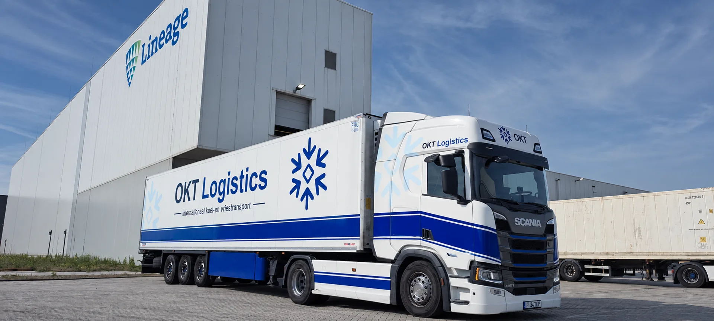
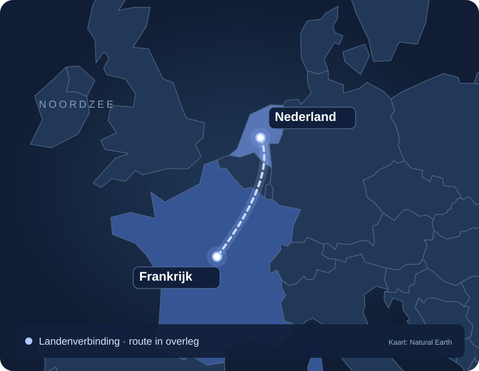

Postcode, locatie en bereikbaarheid
Frankrijk kent sterk uiteenlopende afstanden en ontvangstlocaties. Vermeld volledig adres, toegangsvoorwaarden en contactpersoon. Zo kan de rit concreet worden beoordeeld.
OKT Logistics verzorgt internationale temperatuurgecontroleerde transporten richting Frankrijk. Per aanvraag worden route, temperatuur, planning en losvensters afgestemd.

Een heldere verbinding voor uw gekoelde of diepgevroren zending. Laadplaats, losplaats en tijdvensters bepalen de uiteindelijke route.

Voor gekoelde en diepgevroren zendingen richting Frankrijk worden temperatuur, product, afstand en ontvangstafspraken samen beoordeeld. Controleer vooraf welke referenties en documenten de ontvanger verwacht.
Frankrijk kent sterk uiteenlopende afstanden en ontvangstlocaties. Vermeld volledig adres, toegangsvoorwaarden en contactpersoon. Zo kan de rit concreet worden beoordeeld.
Bespreek de gewenste laad- en losdatum en hoeveel flexibiliteit er is. Een strak levervenster moet passen bij de totale route en een uitvoerbare planning.
Heeft u een bestemming in de regio Parijs of bij Rungis? Geef het exacte afleverpunt en alle toegangsinstructies door. Uitvoering wordt per aanvraag bevestigd; er wordt geen vaste lijndienst beloofd.
Stuur laadadres, losadres, datum, temperatuur, aantal pallets en gewicht. Operations beoordeelt vervolgens welke transportoplossing past.
De productspecificatie en concrete opdracht zijn leidend. Geef de gewenste conditie vooraf door; een foto of voorbeeldtemperatuur is geen toezegging voor iedere rit.
Beide adressen, contactpersonen, laad- en losdatum, tijdvensters, product, temperatuur, pallets en gewicht. Operations beoordeelt daarna prijs en uitvoerbaarheid.
Een aanvraag is vrijblijvend. Operations beoordeelt route, capaciteit en productcondities.